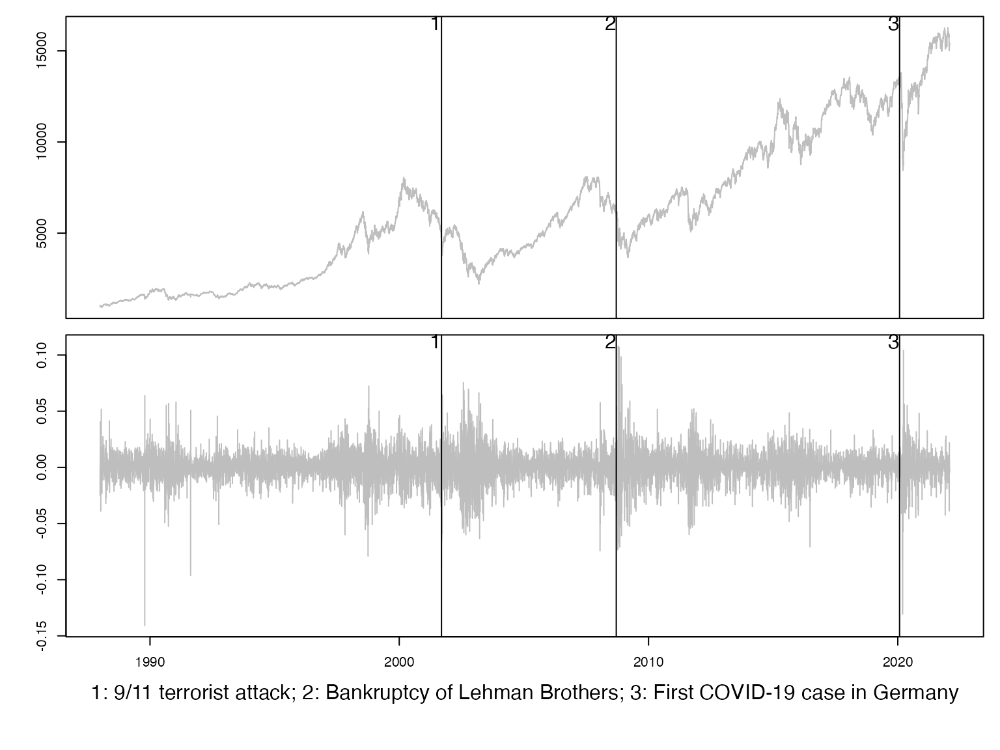

This vignette1 explains how to prepare or simulate data in {fHMM} for estimation.
library(fHMM)
#> Thanks for using {fHMM} version 1.0.0!
#> See https://loelschlaeger.de/fHMM for help.
#> Type 'citation("fHMM")' for citing this R package.Empirical data
Empirical data must be provided as a comma-separated values (CSV) file and its path must be specified in set_controls(), see the vignette on specifying the controls for details.2 The {fHMM} package comes with two datasets of the Deutscher Aktienindex and the VW stock for demonstration purpose that can be accessed as follows:
system.file("extdata", "dax.csv", package = "fHMM")
#> [1] "/Users/runner/work/_temp/Library/fHMM/extdata/dax.csv"
system.file("extdata", "vw.csv", package = "fHMM")
#> [1] "/Users/runner/work/_temp/Library/fHMM/extdata/vw.csv"The prepare_data() function prepares the data based on the data controls specifications and returns an fHMM_data object that can be passed to the fit_model() function for model fitting.
controls <- list(
states = 3,
sdds = "t",
data = list(file = system.file("extdata", "dax.csv", package = "fHMM"),
date_column = "Date",
data_column = "Close",
logreturns = TRUE)
)
controls <- set_controls(controls)
data <- prepare_data(controls)
summary(data)
#> Summary of fHMM empirical data
#> * number of observations: 8778
#> * data source: dax.csv
#> * date column: Date
#> * log returns: TRUEDownload stock data
Daily stock prices listed on https://finance.yahoo.com/ can be downloaded directly via
download_data(symbol, from, to, file)where
symbolis the stock’s symbol that has to match the official symbol on https://finance.yahoo.com,3fromandtodefine the time interval (in format"YYYY-MM-DD"),fileis the name of the file where the .csv-file is saved. Per default, it is saved in the current working directory under the name<symbol>.csv.
For example, the call
download_data(symbol = "^GDAXI", from = "2000-01-01", to = Sys.Date())
#> Download successful.
#> * symbol: ^GDAXI
#> * from: 2000-01-03
#> * to: 2022-04-01
#> * path: /Users/runner/work/fHMM/fHMM/vignettes/^GDAXI.csvdownloads the 21st century daily data of the DAX into the current working directory.
Highlighting events
Historical events can be highlighted by specifying a named list events with elements dates (a vector of dates) and labels (a vector of labels for the events) and passing it to the plot method, for example:
events <- fHMM:::fHMM_events(
list(
dates = c("2001-09-11","2008-09-15","2020-01-27"),
labels = c("9/11 terrorist attack","Bankruptcy of Lehman Brothers","First COVID-19 case in Germany")
)
)
print(events)
#> dates labels
#> 1 2001-09-11 9/11 terrorist attack
#> 2 2008-09-15 Bankruptcy of Lehman Brothers
#> 3 2020-01-27 First COVID-19 case in Germany
plot(data, events = events)
Simulated data
If the data parameter in the model’s controls is unspecified, the model is fitted to simulated data from the model specification. This can be useful for testing the functionality or conducting simulation experiments. True model parameters can be specified by defining an fHMM_parameters-object via the fHMM_parameters() function and passing it to prepare_data().